Bônus
Nos dois pacotes
Guia de Cores
Cada risco pintado na cor sugerida, com o número da linha Anchor e da DMC. Você chega no armarinho sabendo o que pedir.
Nossa Senhora, santos, Sagrado Coração, medalhas e orações. Cada risco numa página A4, já dentro do círculo do bastidor de 20 cm.
+2 bônus grátisGuia de Cores+Aula dos 6 pontos
Quero os 100 riscos →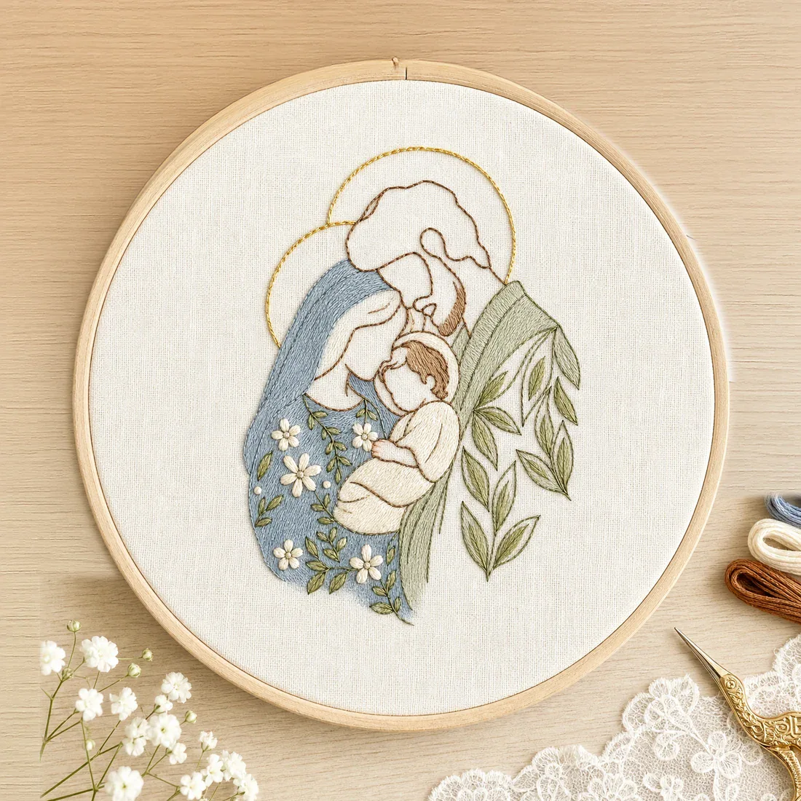
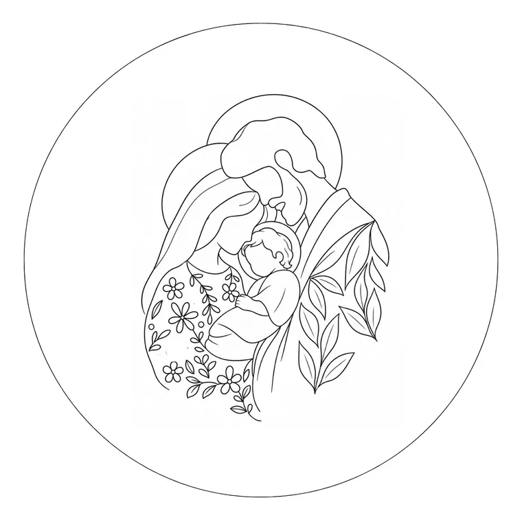
Oito dos 100 riscos bordados no bastidor, com a folha do risco ao lado.
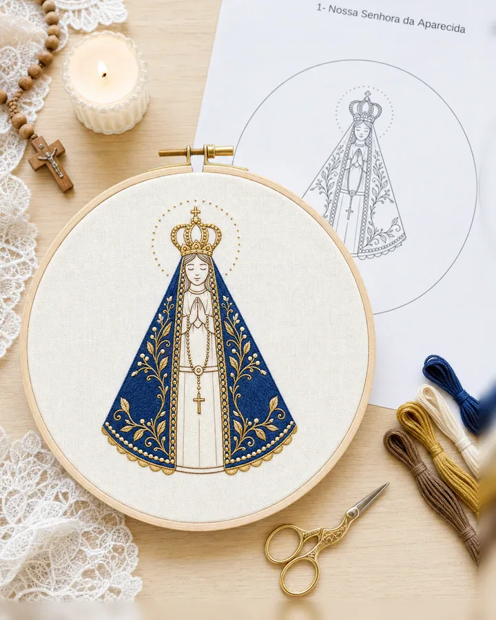
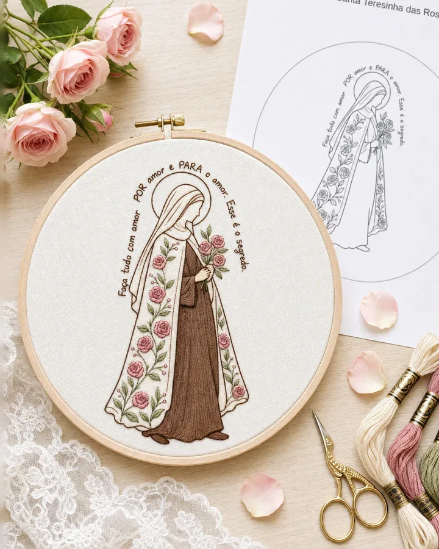
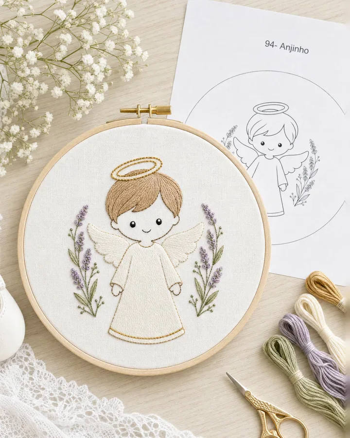
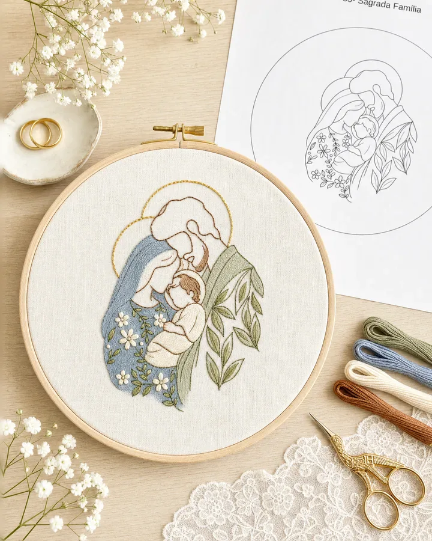
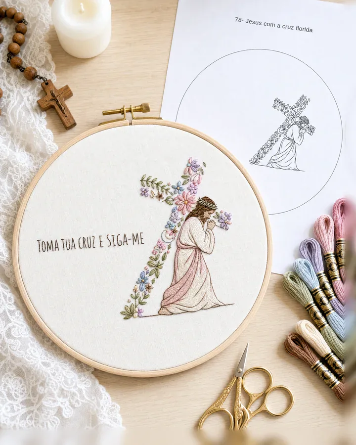
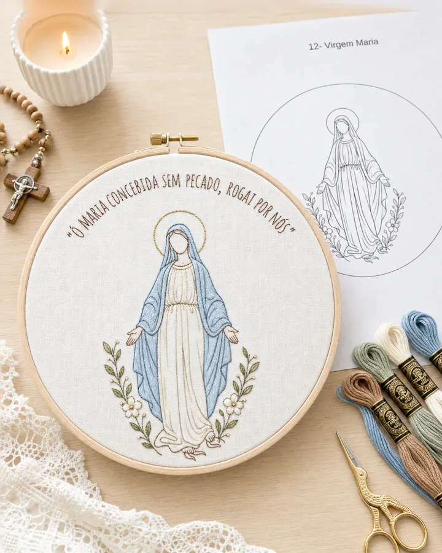
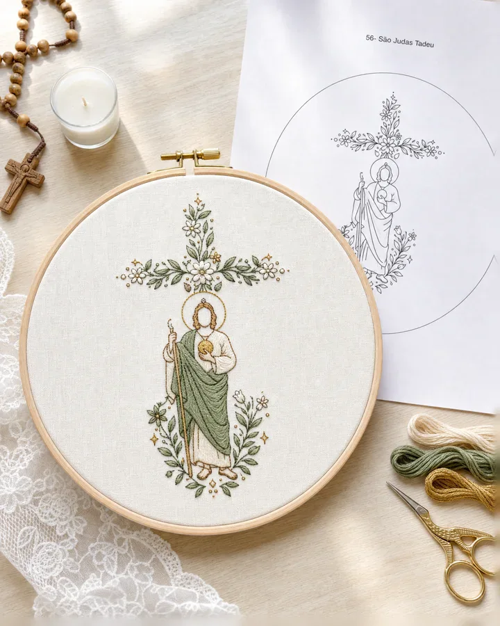
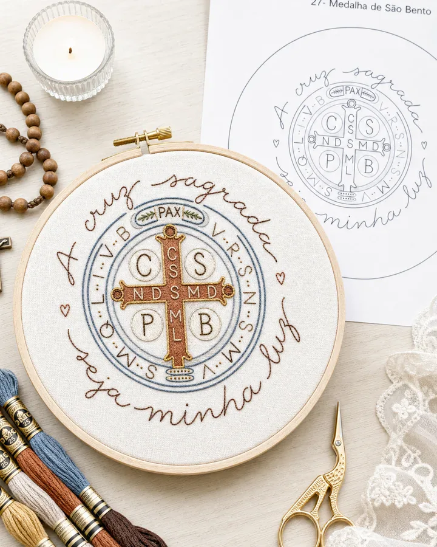
O risco vem só no contorno: o ponto, a linha e as cores ficam à sua escolha.
Você salva uma imagem no celular, imprime, passa pro tecido e descobre que aquilo era uma foto. E foto não se borda.
Degradê e brilho não viram linha.
Traço fino some, traço grosso muda a expressão.
Cada dobra vira uma linha a mais.
Você tem o ponto e o tempo. Falta o risco.
Uma página A4 por risco, montada sempre do mesmo jeito.
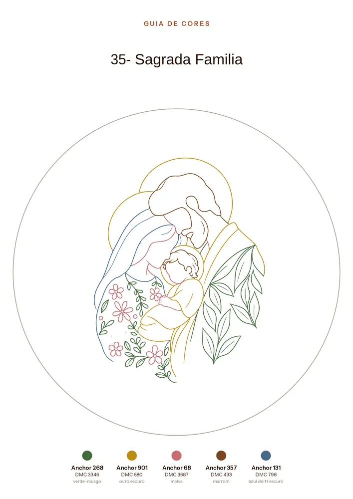
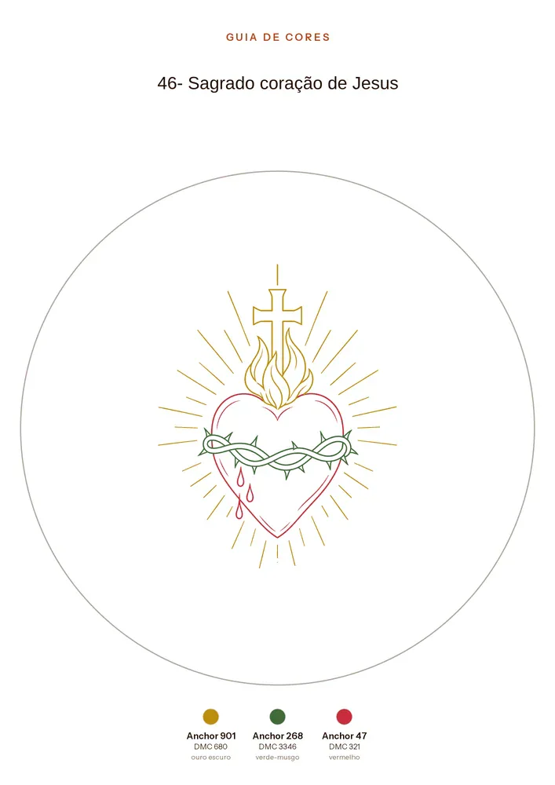
Bônus páginas reais do Guia de Cores: cada risco pintado, com as linhas no rodapé
A partir de R$ 27 · acesso imediato · 7 dias de garantia
Sem pagar nada a mais por eles.
Cada risco pintado na cor sugerida, com o número da linha Anchor e da DMC. Você chega no armarinho sabendo o que pedir.
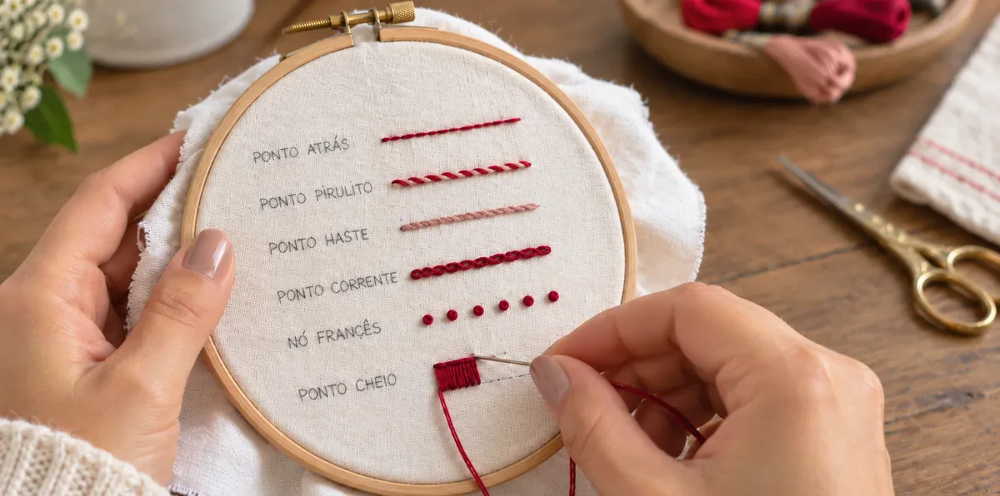
Seis vídeos com a Fernanda: ponto atrás, pirulito, haste, corrente, nó francês e cheio. Vendida sozinha por R$ 67.
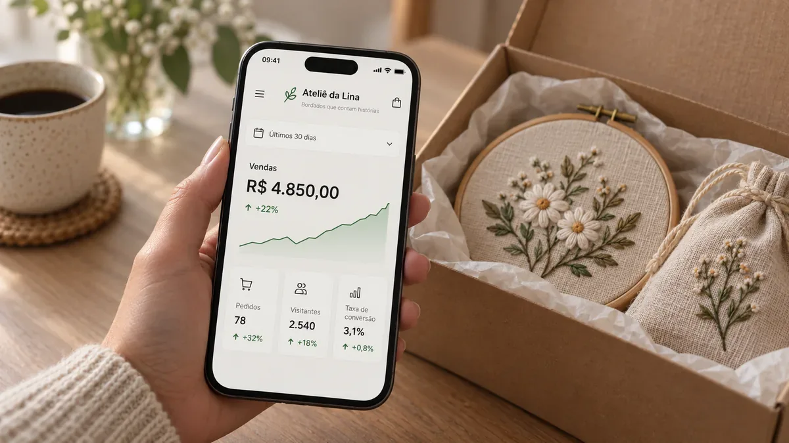
Para vender seus bordados pela internet: a vitrine na bio do Instagram, a oferta, o primeiro anúncio e as métricas.
Pacote Padrão ou Completo: escolha o que combina com o seu momento.
R$ 0,27 por risco
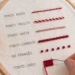
BônusAula Exclusiva dos 6 pontosSeis vídeos com a Fernanda ·Curso completo por R$ 70 a mais
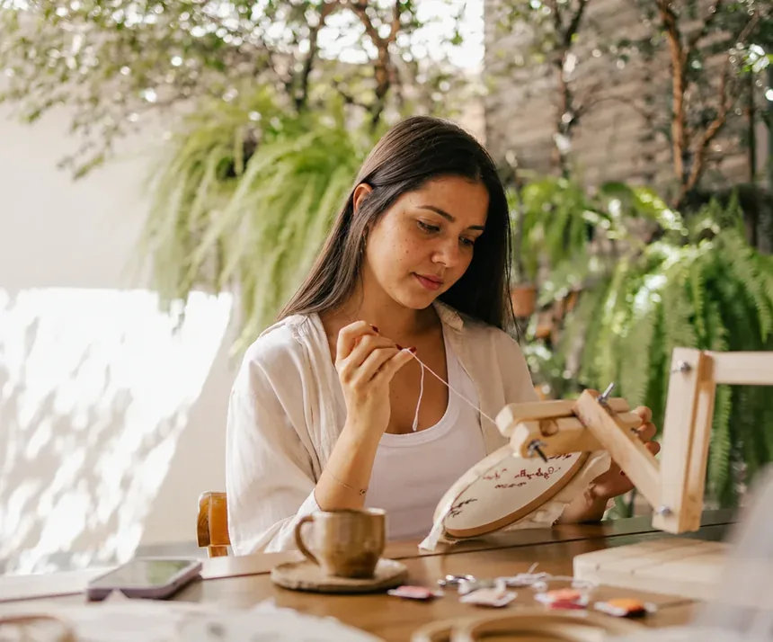
O que eu faço todo dia é bordar à mão aquilo que as pessoas guardam para sempre: o nome do casal, a igreja onde casaram, o rosto de quem já se foi.
Santo é a parte mais delicada do ofício. Por isso eu não quis montar mais uma pasta de imagens tiradas da internet. Desenhei risco por risco pensando em como a linha se comporta, onde o traço engorda e onde o rosto se perde.
Depoimentos de alunas do Curso Alencar Arte, o curso de bordado da Fernanda.
“O curso é completo, do básico ao avançado. Aprendi pontos que nunca consegui entender em outros tutoriais. Recomendo demais!”
“O curso me fez redescobrir minha paixão por trabalhos manuais. A didática da Fernanda é incrível, valeu cada minuto!”
“Bordar com a Fernanda é como ter uma amiga te ensinando com paciência e amor. Me ajudou num momento difícil da minha vida.”
No Padrão: os 100 riscos em PDF e em imagem, com 2 bônus, o Guia de Cores e a Aula Exclusiva dos 6 pontos. No Completo: os riscos, o Guia de Cores e o Curso de Bordado Alencar Arte inteiro, com suporte nas aulas.
O curso. O Padrão custa R$ 27 e o Completo, R$ 97: os R$ 70 a mais trazem os 8 módulos do curso da Fernanda, o de Marketing Digital e Vendas e o suporte da equipe nas aulas.
O acesso chega no seu e-mail assim que o pagamento é aprovado. Na área de membros você baixa os riscos e assiste às aulas, no celular ou no computador.
Não. Qualquer papelaria imprime. Peça em folha A4, no tamanho real (100%).
Os riscos vêm no tamanho do bastidor de 20 cm. Para 18 cm, imprima em 90%. Para 16 cm, em 80%.
Vai. O risco já vem pronto e a Aula Exclusiva dos 6 pontos vem de bônus nos dois pacotes.
Não é matriz de máquina (.PES, .DST). É risco para bordado à mão. Se você digitaliza, pode usar a imagem como base.
Pode, sem limite. Só não pode repassar os arquivos.
Você tem 7 dias de garantia pela Hotmart.
+ 2 bônus grátis · Pix ou cartão · 7 dias de garantia